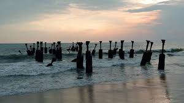
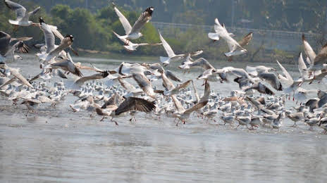
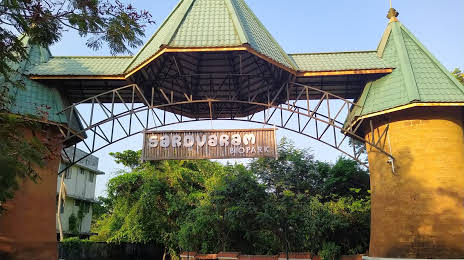
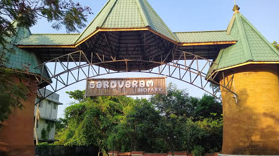
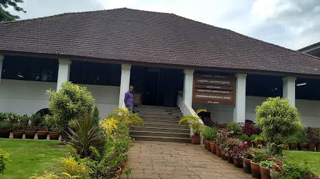

KOZHIKODE
Kozhikode is a coastal city in the south Indian state of Kerala. It was a significant spice trade center and is close to Kappad Beach, where Portuguese explorer Vasco da Gama landed in 1498. The central Kozhikode Beach, overlooked by an old lighthouse, is a popular spot for watching the sunset. Inland, tree-lined Mananchira Square, with its musical fountain, surrounds the massive Mananchira Tank, an artificial pond
IMPORTANT PLACES TO VISIT

 

KADALUNDI BIRD SANCTUARY
KOZHIKODE BEACH
SAROVARAM BIOPARK
